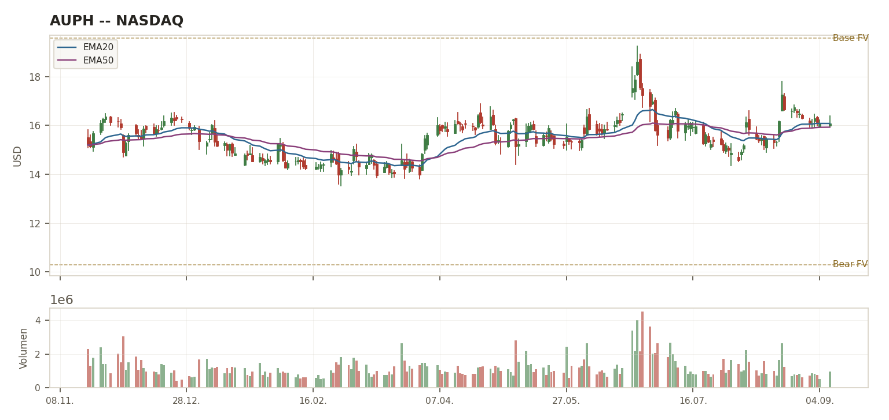

BEOBACHTEN
Konfidenz 🟡 MITTEL (67%) · Sizing-Vorschlag Tier 2 (siehe Aegis-Korrektur S.2)
BEOBACHTEN
Gleiches Rating, strengere Konfidenz/Sizing — siehe Seite 2
| Kriterium | Schwelle | Ist-Wert | Status |
|---|---|---|---|
| K-Kriterien (Gatekeeper) | |||
| ROIC | >20% | 22,17% [LIVE, Jack] — eigene Gegenprüfung fand 52-63% (GuruFocus); Abweichung strittig, aber irrelevant für das Gate (alle Werte >20%) | ✅ Erfüllt |
| FCF-Marge (real) | ≥20% | 27,24% [LIVE, Jack] | ✅ Erfüllt |
| Op. Leverage | Ja/Nein | [TRAINING] Ja | ✅ Erfüllt |
| Piotroski F-Score | ≥7 | 7/9 [LIVE, Jack] — eigene Gegenprüfung fand widersprüchlich auch 4/9 (andere Quelle), nicht aufgelöst | ✅ (⚠ strittig) |
| EPS-CAGR (5J) | ≥12% | [N/V] — Jack wertete dies als Grenzfall statt Sofort-Abbruch (methodische Abweichung, siehe Aegis-Einordnung) | ❌ N/V |
| E-Kriterien | |||
| Bruttomarge | ≥60% | 91,4% (TTM) [LIVE] | ✅ Erfüllt |
| Op. Margin | ≥20% | 45,9% GAAP-TTM [LIVE] | ✅ Erfüllt |
| Revenue-CAGR | ≥8-10% | 22,81% (5J) [LIVE] | ✅ Erfüllt |
| Net Debt/EBITDA | <2,0x | negativ (schuldenfrei, $443,1 Mio. Cash) [VERIFIED] | ✅ Erfüllt |
| Capex/Umsatz | ≤5% | 0,76% [LIVE] | ✅ Erfüllt |
| CCC | <30 Tage | [N/V] | ⚠ N/V (E-Kriterium, kein Abbruch) |
DNA-Urteil: K 4/5 nach Jacks Zählung (methodisch fragwürdig, siehe S.2) · E 5/6. Alle E-Kriterien bis auf CCC klar erfüllt und stark. Kernbefund: das operative Geschäft ist finanziell sehr solide — die Schwächen liegen in Datenqualität (Piotroski-Widerspruch, EPS-CAGR N/V), nicht in der operativen Substanz.
| Kennzahl | Wert |
|---|---|
| Trailing KGV | 7,06x (verzerrt, s.u.) |
| Forward KGV | 15,52x |
| EV/FCF (TTM) | ~9,8x |
| 52W-Performance | +67% |
| Bear/Base/Bull FV* | $10,30 / $19,57 / $25,75 |
*Aus KGV-Multiple-Herleitung (Jack), nicht Python-DCF. Earnings-Quality-Fund: FY2025-Nettogewinn ($287,2 Mio.) enthielt einen einmaligen Steuerertrag von $173,0 Mio. (Auflösung Wertberichtigung latente Steuern, Q4 2025) — Trailing-KGV dadurch irreführend niedrig. Forward-KGV ist die reale Zahl, da 2026 bereits normalisiert bilanziert.
Selbstwiderspruch-Fund (Piotroski): eigene Gegenprüfung fand neben Jacks 7/9 auch einen Wert von 4/9 aus anderer Quelle. Ein Score von 4 würde die ≥7-Schwelle verfehlen und K auf 3/5 drücken (verschärfter Grenzfall statt Jacks "K-BASIS-1"). Nicht abschließend auflösbar — Konfidenz sollte daher strenger sein als Jacks 🟡.
EPS-CAGR [N/V] hätte nach Methodik eigentlich Sofort-Abbruch bedeutet (K-Kriterium N/V = keine Ausnahme) — Jack behandelte es stattdessen als Grenzfall. Eigene Einordnung: vertretbar, da die Undefiniertheit aus einer Verlust-Basis vor 5 Jahren stammt (mathematisch undefinierte CAGR, nicht "keine Daten") — aber ein Punkt, den die Methodik-Formulierung noch nicht klar genug abdeckt.
Sizing-Korrektur: Jacks Tier-2-Vorschlag bei Rating BEOBACHTEN ist inkonsistent (Sizing-Tiers sind für ein tatsächliches KAUFEN gedacht). Eigene Empfehlung: Tier 3 (max. 2%), nicht Tier 2 — wegen Piotroski-Widerspruch + grenzwertigem Beta.
Patentklippe ist das Kernrisiko, nicht Kezar: Kezar/Zetomipzomib ist ein kleiner, früher Optionswert — die 5 noch offenen Generika-Klagen träfen dagegen den LUPKYNIS-Kernumsatz direkt.

🧪 Pipeline jenseits LUPKYNIS (Punkt 34): AUR200 (BAFF/APRIL-Dual-Inhibitor) ist Phase I, AUR300 präklinisch — beide früh. Die Kezar-Akquisition (11.05.2026, $6,955/Aktie + CVR) brachte Zetomipzomib: die Lupus-Nephritis-Studie PALIZADE wurde bereits Oktober 2024 wegen 4 fataler SAEs (Clinical Hold) beendet; die verbleibende Autoimmunhepatitis-Studie PORTOLA hatte zwar März 2025 positive Topline-Daten, aber die FDA verhängte infolge der PALIZADE-Vorfälle einen Partial Hold auch dort. Nächster Schritt ist nur ein FDA-Type-C-Meeting zu einer möglichen Phase-2b — kein Phase-3-Pfad. Einordnung: ein früher, sicherheitsbelasteter Optionswert, kein de-risked Katalysator — keine Automatik-Aufwertung.
⚠ Struktur-Risiko jenseits der aktuellen Lage (Punkt 35): der Teva-Vergleich sichert Exklusivität bis Ende 2036 gegen EINEN von sechs Generika-Herausforderern — 5 weitere (DifGen, Dr. Reddy's, Hikma, Sandoz, Zydus) klagen aktiv weiter, kein FDA-Generikum bisher zugelassen. Die Patentklippe ist damit nur zu 1/6 gelöst, nicht neutralisiert — ein struktureller Mehrjahres-Risikofaktor, unabhängig von der aktuell guten Nachrichtenlage.
👤 Insider-Transaktions-Check (Punkt 36, universell): CEO Kevin Tang kaufte in den letzten 6 Monaten 11 Mal am offenen Markt zu, 0 Verkäufe, ~1,71 Mio. Aktien für ~$25,1 Mio. — echte Open-Market-Käufe, keine routinemäßigen Grants. Klares, unzweideutiges Vertrauenssignal des Managements.
Abstauber-Limit: ~$12,00-13,00 (nahe Bear-FV $10,30, mit Sicherheitsabstand wegen unsicherer EPS-Basis). Aufstufungs-Trigger (mind. 2/3): (1) Piotroski-Widerspruch über gezielte Zweitrecherche/eigene SEC-Berechnung aufgelöst und bestätigt ≥7 · (2) nächste Earnings bestätigen K-Kriterien vollständig inkl. belastbarer EPS-CAGR-Basis · (3) mindestens einer der 5 verbleibenden Generika-Rechtsstreite zugunsten Aurinias entschieden. Abstufungs-Trigger: ein Generika-Verfahren wird zugunsten des Herausforderers entschieden, Guidance-Rücknahme, Insider-Nettoverkäufe.